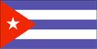
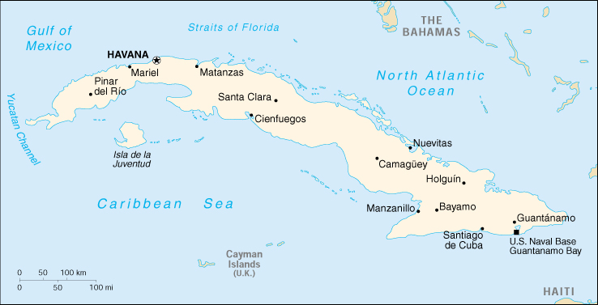

{kind=link}


| Cuba |  |
|
|  | |
| Introduction |
Background: Fidel CASTRO led a rebel army to victory in 1959; his iron will has held the country together since. Cuba's communist revolution, with Soviet support, was exported throughout Latin America and Africa during the 1960s, 70s, and 80s. The country is now slowly recovering from a severe economic recession following the withdrawal of former Soviet subsidies, worth $4 billion to $6 billion annually, in 1990. Havana blames its difficulties on the US embargo in place since 1962.
| Geography |
Location: Caribbean, island between the Caribbean Sea and the North Atlantic Ocean, south of Florida
Geographic coordinates: 21 30 N, 80 00 W
Map references: Central America and the Caribbean
Area:
total:
110,860 sq km
land:
110,860 sq km
water:
0 sq km
Area - comparative: slightly smaller than Pennsylvania
Land boundaries:
total:
29 km
border countries:
US Naval Base at Guantanamo Bay 29 km
note:
Guantanamo Naval Base is leased by the US and thus remains part of Cuba
Coastline: 3,735 km
Maritime claims:
exclusive economic zone:
200 nm
territorial sea:
12 nm
Climate: tropical; moderated by trade winds; dry season (November to April); rainy season (May to October)
Terrain: mostly flat to rolling plains, with rugged hills and mountains in the southeast
Elevation extremes:
lowest point:
Caribbean Sea 0 m
highest point:
Pico Turquino 2,005 m
Natural resources: cobalt, nickel, iron ore, copper, manganese, salt, timber, silica, petroleum, arable land
Land use:
arable land:
24%
permanent crops:
7%
permanent pastures:
27%
forests and woodland:
24%
other:
18% (1993 est.)
Irrigated land: 9,100 sq km (1993 est.)
Natural hazards: the east coast is subject to hurricanes from August to October (in general, the country averages about one hurricane every other year); droughts are common
Environment - current issues: pollution of Havana Bay; overhunting threatens wildlife populations; deforestation
Environment - international agreements:
party to:
Antarctic Treaty, Biodiversity, Climate Change, Desertification, Endangered Species, Environmental Modification, Hazardous Wastes, Law of the Sea, Marine Dumping, Ozone Layer Protection, Ship Pollution
signed, but not ratified:
Antarctic-Environmental Protocol, Climate Change-Kyoto Protocol, Marine Life Conservation
Geography - note: largest country in Caribbean
| People |
Population: 11,141,997 (July 2000 est.)
Age structure:
0-14 years:
21% (male 1,221,602; female 1,157,846)
15-64 years:
69% (male 3,849,135; female 3,829,599)
65 years and over:
10% (male 503,711; female 580,104) (2000 est.)
Population growth rate: 0.39% (2000 est.)
Birth rate: 12.68 births/1,000 population (2000 est.)
Death rate: 7.31 deaths/1,000 population (2000 est.)
Net migration rate: -1.52 migrant(s)/1,000 population (2000 est.)
Sex ratio:
at birth:
1.06 male(s)/female
under 15 years:
1.06 male(s)/female
15-64 years:
1.01 male(s)/female
65 years and over:
0.87 male(s)/female
total population:
1 male(s)/female (2000 est.)
Infant mortality rate: 7.51 deaths/1,000 live births (2000 est.)
Life expectancy at birth:
total population:
76.21 years
male:
73.84 years
female:
78.73 years (2000 est.)
Total fertility rate: 1.6 children born/woman (2000 est.)
Nationality:
noun:
Cuban(s)
adjective:
Cuban
Ethnic groups: mulatto 51%, white 37%, black 11%, Chinese 1%
Religions: nominally 85% Roman Catholic prior to CASTRO assuming power; Protestants, Jehovah's Witnesses, Jews, and Santeria are also represented
Languages: Spanish
Literacy:
definition:
age 15 and over can read and write
total population:
95.7%
male:
96.2%
female:
95.3% (1995 est.)
People - note: illicit migration is a continuing problem; Cubans attempt to depart the island and enter the US using homemade rafts, alien smugglers, or falsified visas; some 3,800 Cubans took to the Florida Straits in 1999; the US Coast Guard interdicted about 40% of these migrants
| Government |
Country name:
conventional long form:
Republic of Cuba
conventional short form:
Cuba
local long form:
Republica de Cuba
local short form:
Cuba
Data code: CU
Government type: Communist state
Capital: Havana
Administrative divisions: 14 provinces (provincias, singular - provincia) and 1 special municipality* (municipio especial); Camaguey, Ciego de Avila, Cienfuegos, Ciudad de La Habana, Granma, Guantanamo, Holguin, Isla de la Juventud*, La Habana, Las Tunas, Matanzas, Pinar del Rio, Sancti Spiritus, Santiago de Cuba, Villa Clara
Independence: 20 May 1902 (from Spain 10 December 1898; administered by the US from 1898 to 1902)
National holiday: Rebellion Day, 26 July (1953); Liberation Day, 1 January (1959)
Constitution: 24 February 1976, amended July 1992
Legal system: based on Spanish and American law, with large elements of Communist legal theory; does not accept compulsory ICJ jurisdiction
Suffrage: 16 years of age; universal
Executive branch:
chief of state:
President of the Council of State and President of the Council of Ministers Fidel CASTRO Ruz (prime minister from February 1959 until 24 February 1976, when office was abolished; president since 2 December 1976); First Vice President of the Council of State and First Vice President of the Council of Ministers Gen. Raul CASTRO Ruz (since 2 December 1976); note - the president is both the chief of state and head of government
head of government:
President of the Council of State and President of the Council of Ministers Fidel CASTRO Ruz (prime minister from February 1959 until 24 February 1976 when office was abolished; president since 2 December 1976); First Vice President of the Council of State and First Vice President of the Council of Ministers Gen. Raul CASTRO Ruz (since 2 December 1976); note - the president is both the chief of state and head of government
cabinet:
Council of Ministers proposed by the president of the Council of State, appointed by the National Assembly
note:
there is also a Council of State whose members are elected by the National Assembly
elections:
president and vice president elected by the National Assembly; election last held 24 February 1998 (next election unscheduled)
election results:
Fidel CASTRO Ruz elected president; percent of legislative vote - 100%; Raul CASTRO Ruz elected vice president; percent of legislative vote - 100%
Legislative branch:
unicameral National Assembly of People's Power or Asemblea Nacional del Poder Popular (601 seats, elected directly from slates approved by special candidacy commissions; members serve five-year terms)
elections:
last held 11 January 1998 (next to be held in 2003)
election results:
percent of vote - PCC 94.39%; seats - PCC 601
Judicial branch: People's Supreme Court or Tribunal Supremo Popular; president, vice president, and other judges are elected by the National Assembly
Political parties and leaders: only party - Cuban Communist Party or PCC [Fidel CASTRO Ruz, first secretary]
International organization participation: CCC, ECLAC, FAO, G-77, IAEA, ICAO, ICRM, IFAD, IFRCS, IHO, ILO, IMO, Inmarsat, Intelsat (nonsignatory user), Interpol, IOC, IOM (observer), ISO, ITU, LAES, LAIA, NAM, OAS (excluded from formal participation since 1962), OPCW, PCA, UN, UNCTAD, UNESCO, UNIDO, UPU, WCL, WFTU, WHO, WIPO, WMO, WToO, WTrO
Diplomatic representation in the US: none; note - Cuba has an Interests Section in the Swiss Embassy, headed by Principal Officer Fernando REMIREZ DE ESTENOZ; address: Cuban Interests Section, Swiss Embassy, 2630 16th Street NW, Washington, DC 20009; telephone: [1] (202) 797-8518
Diplomatic representation from the US: none; note - the US has an Interests Section in the Swiss Embassy, headed by Principal Officer Vicki HUDDLESTON; address: USINT, Swiss Embassy, Calzada between L and M Streets, Vedado Seccion, Havana; telephone: 33-3551 through 3559 and 33-3543 through 3547 (operator assistance required); FAX: 33-3700; protecting power in Cuba is Switzerland
Flag description: five equal horizontal bands of blue (top and bottom) alternating with white; a red equilateral triangle based on the hoist side bears a white, five-pointed star in the center
| Economy |
Economy - overview: The state under the durable dictatorship of Fidel CASTRO plays the primary role in the domestic economy and controls practically all foreign trade. The government has undertaken several reforms in recent years to stem excess liquidity, increase labor incentives, and alleviate serious shortages of food, consumer goods, and services. The liberalized agricultural markets introduced in October 1994, at which state and private farmers sell above-quota production at unrestricted prices, have broadened legal consumption alternatives and reduced black market prices. Government efforts to lower subsidies to unprofitable enterprises and to shrink the money supply caused the semi-official exchange rate for the Cuban peso to move from a peak of 120 to the dollar in the summer of 1994 to 21 to the dollar by yearend 1999. New taxes introduced in 1996 have helped drive down the number of self-employed workers from 208,000 in January 1996. Havana announced in 1995 that GDP declined by 35% during 1989-93, the result of lost Soviet aid and domestic inefficiencies. The drop in GDP apparently halted in 1994, when Cuba reported 0.7% growth, followed by increases of 2.5% in 1995 and 7.8% in 1996. Growth slowed again in 1997 and 1998 to 2.5% and 1.2% respectively. Growth recovered again in 1999 with a 6.2% increase in GDP, due to the continued growth of tourism. Central control is complicated by the existence of the informal economy, much of which is denominated in dollars. Living standards for the average (dollarless) Cuban remain at a depressed level compared with 1990. The continuation of gradual economic reforms and increase in tourism suggest growth of 4% to 5% in 2000.
GDP: purchasing power parity - $18.6 billion (1999 est.)
GDP - real growth rate: 6.2% (1999 est.)
GDP - per capita: purchasing power parity - $1,700 (1999 est.)
GDP - composition by sector:
agriculture:
7.4%
industry:
36.5%
services:
56.1% (1997 est.)
Population below poverty line: NA%
Household income or consumption by percentage share:
lowest 10%:
NA%
highest 10%:
NA%
Inflation rate (consumer prices): 0.3% (1999 est.)
Labor force:
4.5 million economically active population
note:
state sector 76%, non-state sector 24% (1996 est.)
Labor force - by occupation: agriculture 23%, industry 24%, services 53%
Unemployment rate: 6% (December 1999 est.)
Budget:
revenues:
$13.5 billion
expenditures:
$14.3 billion, including capital expenditures of $NA (2000 est.)
Industries: sugar, petroleum, food, tobacco, textiles, chemicals, paper and wood products, metals (particularly nickel), cement, fertilizers, consumer goods, agricultural machinery
Industrial production growth rate: 6% (1995 est.)
Electricity - production: 15.274 billion kWh (1998)
Electricity - production by source:
fossil fuel:
89.52%
hydro:
0.65%
nuclear:
0%
other:
9.83% (1998)
Electricity - consumption: 14.205 billion kWh (1998)
Electricity - exports: 0 kWh (1998)
Electricity - imports: 0 kWh (1998)
Agriculture - products: sugarcane, tobacco, citrus, coffee, rice, potatoes, beans; livestock
Exports: $1.4 billion (f.o.b., 1999 est.)
Exports - commodities: sugar, nickel, tobacco, shellfish, medical products, citrus, coffee
Exports - partners: Russia 25%, Netherlands 23%, Canada 16% (1999 est.)
Imports: $3.2 billion (c.i.f., 1999 est.)
Imports - commodities: petroleum, food, machinery, chemicals
Imports - partners: Spain 16%, Venezuela 15%, Mexico 7% (1999 est.)
Debt - external: $11.2 billion (convertible currency, 1998); another $20 billion owed to Russia (1998)
Economic aid - recipient: $68.2 million (1997 est.)
Currency: 1 Cuban peso (Cu$) = 100 centavos
Exchange rates: Cuban pesos (Cu$) per US$1 - 1.0000 (nonconvertible, official rate, linked to the US dollar)
Fiscal year: calendar year
| Communications |
Telephones - main lines in use: 353,000 (1995)
Telephones - mobile cellular: 1,939 (1995)
Telephone system:
domestic:
principal trunk system, end to end of country, is coaxial cable; fiber-optic distribution in Havana and on Isla de la Juventud; 2 microwave radio relay installations (one is old, US-built; the other newer, Soviet-built); both analog and digital mobile cellular service established
international:
satellite earth station - 1 Intersputnik (Atlantic Ocean region)
Radio broadcast stations: AM 169, FM 55, shortwave 1 (1998)
Radios: 3.9 million (1997)
Television broadcast stations: 58 (1997)
Televisions: 2.64 million (1997)
Internet Service Providers (ISPs): 1 (1999)
| Transportation |
Railways:
total:
4,807 km
standard gauge:
4,807 km 1.435-m gauge (147 km electrified)
note:
a large amount of track is in private use by sugar plantations
Highways:
total:
60,858 km
paved:
29,820 km (including 638 km of expressway)
unpaved:
31,038 km (1997 est.)
Waterways: 240 km
Ports and harbors: Cienfuegos, Havana, Manzanillo, Mariel, Matanzas, Nuevitas, Santiago de Cuba
Merchant marine:
total:
15 ships (1,000 GRT or over) totaling 63,269 GRT/90,228 DWT
ships by type:
bulk 1, cargo 7, liquified gas 1, petroleum tanker 1, refrigerated cargo 5 (1999 est.)
Airports: 170 (1999 est.)
Airports - with paved runways:
total:
77
over 3,047 m:
7
2,438 to 3,047 m:
9
1,524 to 2,437 m:
15
914 to 1,523 m:
11
under 914 m:
35 (1999 est.)
Airports - with unpaved runways:
total:
93
914 to 1,523 m:
32
under 914 m:
61 (1999 est.)
| Military |
Military branches: Revolutionary Armed Forces (FAR) includes ground forces, Revolutionary Navy (MGR), Air and Air Defense Force (DAAFAR), Territorial Troops Militia (MTT), and Youth Labor Army (EJT); the Border Guard (TGF) is controlled by the Interior Ministry
Military manpower - military age: 17 years of age
Military manpower - availability:
males age 15-49:
3,079,352
females age 15-49:
3,022,063 (2000 est.)
Military manpower - fit for military service:
males age 15-49:
1,906,172
females age 15-49:
1,865,369 (2000 est.)
Military manpower - reaching military age annually:
males:
80,771
females:
76,819 (2000 est.)
Military expenditures - dollar figure: $NA
Military expenditures - percent of GDP: roughly 4% (FY95 est.)
Military - note: Moscow, for decades the key military supporter and supplier of Cuba, cut off almost all military aid by 1993
| Transnational Issues |
Disputes - international: US Naval Base at Guantanamo Bay is leased to US and only mutual agreement or US abandonment of the area can terminate the lease
Illicit drugs: territorial waters and air space serve as transshipment zone for cocaine bound for the US and Europe; established the death penalty for certain drug-related crimes in 1999